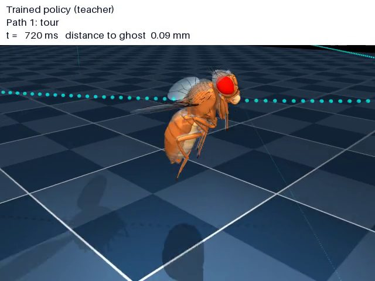
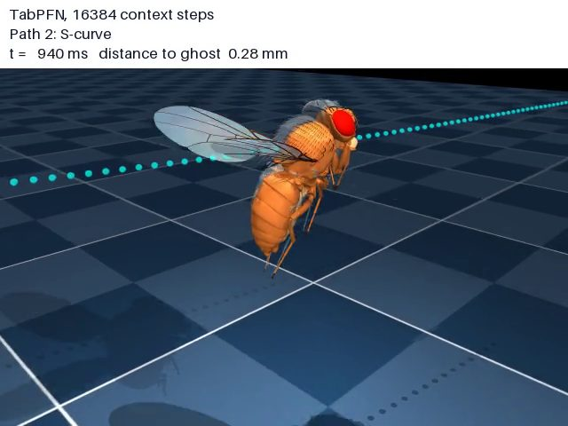
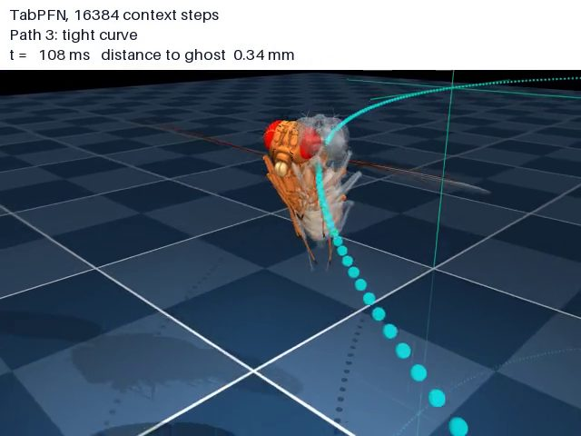
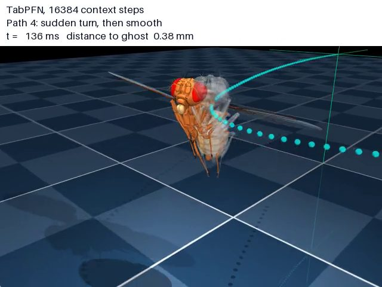
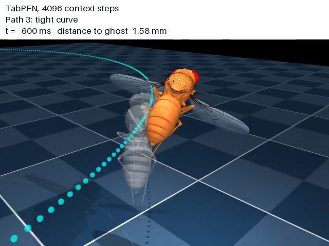
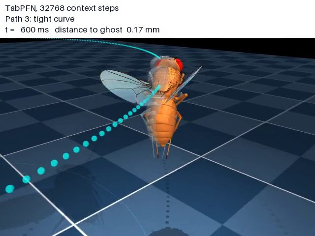
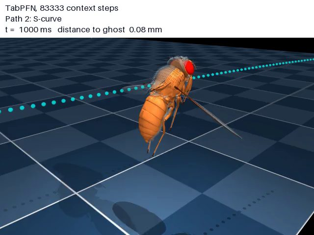

We recorded a trained AI flying a simulated fruit fly, turned every 0.2 ms of flight into a row of a table, and asked TabPFN, a model that learns from examples it is shown rather than from training, to predict where the fly goes and to fly it.




An expert pilot (a neural network trained by reinforcement learning) flies a virtual fruit fly, and we write down everything it senses and does. We give a sample of those notes to TabPFN as examples. TabPFN then reads the fly's live senses and, by analogy with the examples, says what to do next, 5,000 times per simulated second. It predicts the fly's future position better than trained models, and with enough examples it flies smooth curves on its own, but sudden sharp turns still beat it.
Most AI models must be trained on your data before they can predict anything. TabPFN is different: it was trained once, on millions of made-up tables, to become very good at one skill: look at a table of examples, then fill in the missing answers for new rows. You hand it your table and it answers straight away. Prior Labs is the company that builds it.
| Item | Value |
|---|---|
| Version | TabPFN 3.5 Fast (84M parameters), run locally; the full 3.5 has 220M |
| Pre-training | millions of synthetic tables (prior-data fitted network, "PFN") |
| Limits | up to 1M context rows, 20k columns |
| Output | a full distribution per prediction (we use the mean, or quantiles) |
| Speed trick | fit_with_cache: the context is encoded once, each query only adds the new rows |
| Cloud API | 3.5 Plus via tabpfn-client, used for our offline experiments |
| Licence | open weights, non-commercial |
The fruit fly (Drosophila) is a tiny, very agile flyer: its wings beat about 200 times a second and it can swerve 80° in a few hundredths of a second. Scientists built a detailed virtual copy of its body and trained an AI pilot to copy recorded real flights. That pilot is our teacher, and the virtual fly is our robot.
Step 1: let the expert pilot fly every recorded path many times, sometimes with its hands shaking (noise) or with a weaker wing or heavier body, and log every moment. Step 2: turn those logs into a big table. Step 3: give TabPFN a slice of that table and ask it either "where will the fly be?" or "what should the fly do now?". Step 4: for flying, feed TabPFN's answer back into the simulator and repeat.
Each pass flies all 272 recorded paths (92 evasions and 44 saccades, each also mirrored), logging every 0.2 ms step. The noisy passes make the fly wobble so the policy shows how it recovers.
| Pass | Change | Purpose | Steps | Distance to ghost (mean · 95% · max) |
|---|---|---|---|---|
| 1 clean | none | prediction, copying the policy | 260,001 | 0.33 · 0.79 · 7.7 mm |
| 2 noise | action noise 0.5 × policy's spread | controller context | 259,997 | 0.34 · 0.82 · 9.1 mm |
| 3 noise | same, another seed | controller context | 262,485 | 0.34 · 0.81 · 8.8 mm |
| 6 strong noise | action noise 2.0 × | recovery examples | 237,637 | 1.13 · 4.06 · 27.9 mm |
| 4 weak wing | left wing strength × 0.7 | adaptation (B) | 259,409 | 0.55 · 1.56 · 26.2 mm |
| 5 heavy | body mass × 1.2 | adaptation (B) | 262,418 | 0.36 · 0.90 · 10.1 mm |
TabPFN predicts one column. Each recorded step becomes 12 rows (one per action), all with the same 104 senses and a different action_id. At decision time we ask 12 rows: the live senses with action_id 0 to 11. The 12 answers are the actions MuJoCo applies for the next 0.2 ms.
| Exp | Question | Mode |
|---|---|---|
| A | Where will the fly be in 1, 3, 10 wingbeats? | offline |
| B | Adapt to a weak wing or heavier body by adding rows? | offline |
| C | Copy the policy's actions offline, by context size | offline |
| D | Fly recorded held-out flights | closed loop |
| E | Do path shapes and sudden turns matter? | closed loop |
| F | Does adding its own mistakes (DAgger) help? | closed loop |
| G | Which actions break the flight? | closed loop |
All hold out the same 27 flight pairs (~20%), so no test flight appears in any context.
| Layer | What we used |
|---|---|
| Simulation | flybody + MuJoCo + dm_control; policy in TensorFlow 2.8 |
| Models | tabpfn 10.2 (local, PyTorch CUDA), tabpfn-client (API), scikit-learn baselines |
| Data | NumPy tables, 8 parallel CPU workers per pass |
| Hardware | laptop GTX 1050 (3 GB); Nebius H100 80 GB for big contexts |
| Remote demo | viewer on a laptop, TabPFN on the H100 over an SSH tunnel |
| Outputs | labelled MP4 showreels, JSON results, this page |
As a forecaster, TabPFN is excellent: more accurate than trained models and honest about its uncertainty, and it adapts to a changed body just by being shown a few examples. As a pilot, it needs a lot of examples: with 3k rows it crashes in 0.06 s; with 400k–1M rows it flies smooth curves as precisely as the trained policy (0.10 mm), but every context size still loses the path at sudden sharp turns.
| Path | Length | Policy | TabPFN, 256 steps | TabPFN, 16,384 steps | Mean distance to ghost (16k) |
|---|---|---|---|---|---|
| S-curve (left then right) | 2.0 s | full | ~0.06 s | full 2.0 s | 0.20 mm |
| Tight curve, 360°/s | 1.0 s | full | 0.06 s | full 1.0 s | 0.28 mm |
| Smooth, then sudden turn | 1.5 s | full | – | 0.63 s (turn at 0.60) | 0.37 mm |
| Sudden turn, then smooth | 1.5 s | full | – | 0.18 s (turn at 0.15) | 0.64 mm |
| Tour (every turn type) | 4.0 s | full | – | 0.83 s (turn at 0.80) | 0.34 mm |
The same five paths, flown once each by TabPFN controlling all 12 actions, with four context sizes from 49k to 1M rows (4,096 to 83,333 recorded steps). Every run is on video; the distance to the ghost is logged at every 0.2 ms step.



| Context | Rows | Decision time* | S-curve 2 s | Tight curve 1 s | Tour 4 s | Sudden → smooth | Smooth → sudden |
|---|---|---|---|---|---|---|---|
| 4,096 | 49k | 31 ms | full · 0.14 mm | 624 ms | 827 ms | 182 ms | 627 ms |
| 16,384 | 197k | 42 ms | full · 0.20 mm | full · 0.28 mm | 829 ms | 178 ms | 627 ms |
| 32,768 | 393k | 55 ms | full · 0.10 mm | full · 0.16 mm | 877 ms | 222 ms | 683 ms |
| 83,333 | 1M | 114 ms | full · 0.10 mm | full · 0.18 mm | 873 ms | 228 ms | 677 ms |
| Policy | – | – | full · 0.09 mm | full · 0.12 mm | full · 0.15 mm | – | – |
*Alone on the H100, from the decision-time test; during the sweep runs shared the GPU and were slower. Sudden turns sit at 0.15 s, 0.60 s and 0.80 s (tour). One deterministic run per cell. Videos: results/sweep/tabpfn_ctx<N>.mp4.
Smooth flight is a data-quantity problem, and it is solved: from about 400k rows TabPFN flies curves as precisely as the policy. Sudden turns are not a quantity problem: 20× more rows only delays the failure by ~50 ms. The fix has to be which rows are shown (more saccade examples, or rows retrieved for the current moment) or a longer look ahead at the path.
TabPFN is too slow to fly a real fly in real time, it only knows what its examples show (and sharp turns are rare in them), and everything here is in simulation with a perfect target to follow.
Show TabPFN more of the right examples (especially sharp turns), let it decide less often, use its own uncertainty, and make it faster, then try it on a real robot.
| Idea | What it means | Fixes | Expected impact | Effort |
|---|---|---|---|---|
| Over-sample turns | Fill a large share of the context with saccade rows | sudden turns | high | low |
| Retrieve rows per moment | Pick the most similar recorded states every few ms (Prior Labs' "choose the rows you show") | fixed context, turns | high | medium |
| 1M-row context | Tested: smooth paths as precise as the policy; sudden turns only ~50 ms better | smooth accuracy | done | low |
| Decide less often | One decision per wingbeat (~4.6 ms), holding the action between | speed (23× fewer calls) | medium | medium |
| Use the uncertainty | Fall back to a safe controller, or warn, when the prediction spread is wide | safety | medium | low |
| Plan with candidates | Score several candidate actions by predicted drift; pick the best (as DuckPFN chose postures) | turns, robustness | medium | medium |
| Fewer columns | Keep ~40 informative inputs instead of 104 | speed, laptop GPUs | low–medium | low |
| Faster inference | torch.compile, int8 cache, batching; or distil TabPFN into a small network | real time | medium | medium |
| DAgger at scale | Add TabPFN's own mistakes, labelled by the policy, to a big context | recovery | medium | medium |
| Real robot | Same table approach on a drone or legged robot at 20–50 Hz | sim only | high | high |